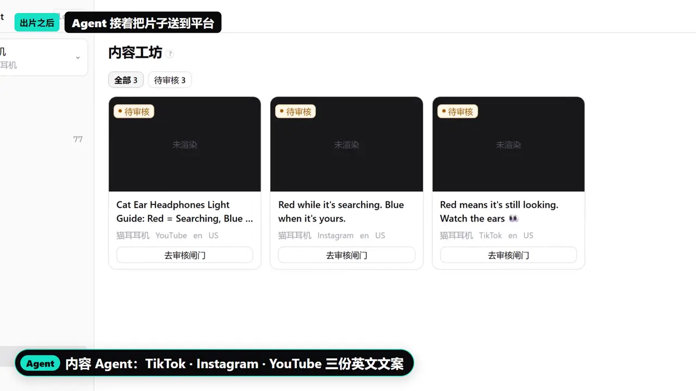

- 团队项目
- 多 Agent 接力
- 跨境营销
- 短视频出片
- 真实发布
CrossCast跨境电商短视频多 Agent 平台
跨境卖家做海外营销，选题靠猜、内容产出慢、各国广告规则不熟容易被罚。CrossCast 让一个人指挥一支 AI 团队：4 个流水线 Agent 接力完成爆款分析、内容与分镜、合规审查和发布排期，另有出片总控、实拍剪辑 2 个独立 Agent 负责视频。经人工确认后发出，已在 TikTok、YouTube 真实发布。
- 王嘉栾 · 队长
- 系统架构与核心开发
- 匡思鑫
- 接入多家大模型厂商（实测 12 家的差异，按厂商动态出参数面板）与云端视频生成；部署与排障；决赛路演稿汇总定稿与 Demo 视频制作
给跨境卖家的几条保证
- 一条 AI 流水线接力完成：选题分析 → 内容分镜 → 合规审查 → 发布排期，中间任何一步没过关就当场停下，不发半成品
- 合规关不过不发，发布前必须有人点确认，AI 不会自作主张发出去
- 已在 TikTok、YouTube 真实发布过内容，不是 demo
- 团队
- 天衍灵泽 · 2 人
- 周期
- 2026.08 – 10
- 结果
- 黑客松二等奖
- 图号
- CC-01